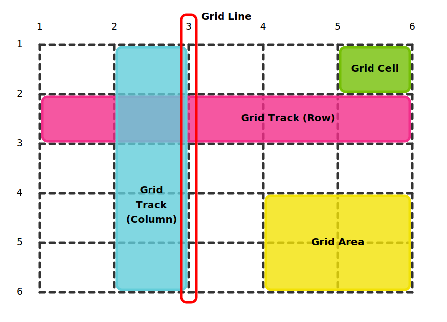

Po co ten grid?
Potrzeba stworzenia prostego systemu do budowania layout贸w (tabele, floaty, div-oza itp. nie speniay oczekiwa i byy kiepsk praktyk).
Przyjazny zapis i mo偶liwo atwej edycji w kontekcie responsywnoci. Standard dopasowany do aktualnego stanu stron internetowych
-
display:grid wasno grid dziaa tylko na swoje dzieci i ustawia elementy w siatce-
grid-template-columns: 100px 300px;okrelamy wielko i ilo kolumn ( w tym przypadku powstan dwie kolumny o szerokoci 100 i 300px -
grid-template-rows: 100px 300px;wasno ta definiuje nam liczb wierszy i jak bd miay szeroko -
frnowa jednostka, jest to w pewnym sensie uamek, oraz jest brana z wolnej przestrzeni nie zdefiniowanej przez jednostki. Czyli jeli mamy trzy kolumny o szerokociach 1fr 1fr 2fr, to pierwsza i druga kolumna bd miay szeroko 1/4 szerokoci ekranu, a trzecia bdzie miaa 2/4 szerokoci ekranu (1+1+2=4). Oraz gdy mamy dwie kolumny 200px 1fr; to 1fr bdzie wynosi dokadnie tyle co wolna przestrze jaka zostaa po zajciu 200px przez 1sz kolumn -
repeat(ileRazy, warto)okrela ile chcemy mie kolumn/wierszy o takiej samej szerokoci -
column-gapwasno kt贸ra tworzy przerwy midzy kolumnami -
row-gapwasno kt贸ra tworzy przerwy midzy wierszami -
minmax(minWarto, maxWarto)
-